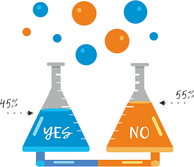

Спору нет: 20 июля 1969 года человечество сделало гигантский шаг. Но какой?
Армстронг скакал по Луне. А может, по голливудской студии? Мы никогда этого наверняка не узнаем.
Наверняка - не узнаем! Но предположить можем. Собрать “анамнез”, провести “консилиум” и поставить “диагноз” на основе максимально достоверных источников информации и мнения специалистов всех уровней: от диванных любителей теории заговоров до докторов физических наук, от людей, которые видели ракету только в Диснейлэнде до Нила Армстронга лично.
ПРАВДА или ВЫМЫСЕЛ?
Search For Truth – платформа, разработанная специально для ведения грамотных дискуссий: с аргументацией и пруфлинками, разделением на аспекты и обоснованной оценкой аргументации оппонента.
При нажатии на кнопку “добавить дискуссию” открывается окно с полями:
При открытии любой дискуссии открывает окно с:
3)Вы можете оценить аргументы других пользователей в двухмерной системе координат (надежность/убедительность), что позволяет визуализировать весомость этих аргументов.
4) У нас присутствует удобная система сортировки топов, благодаря которой вы всегда сможете увидеть:
Ловцы багов и изобретатели фич
Творцы-дизайнеры и креативные художники
Тёмные маги SEO и SMM
Мастера своего дела и настоящиеPRO во множестве других сфер;
Заинтересованным тыжпрограммистам и веб-мастерам: welcome в репозиторий здесь, на GitHub.
Всех заинтересованных послушаем, обнимем, дадим поработать:
https://sft.space/ - листаем вниз – Feedback/Обратная связь
evgenija.grigoreva@gmail.com